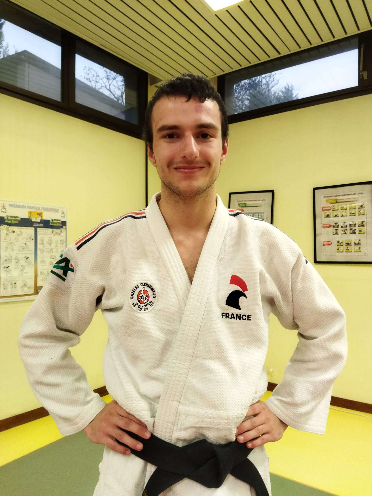
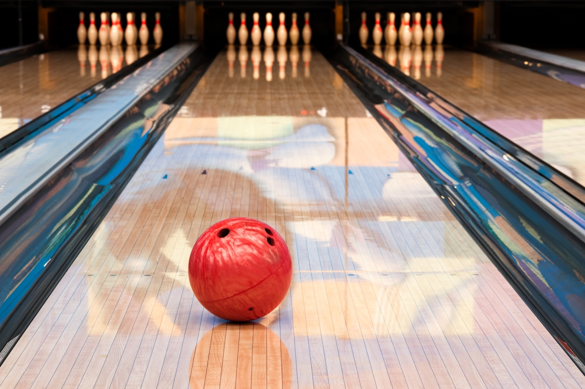

Judo
Intitulé : Parcours et engagement dans le Judo.
Contexte et durée : J’ai débuté le Judo à l’âge de 5 ans, et cela fait maintenant 14 ans que je pratique ce sport. À 16 ans, j’ai obtenu ma ceinture noire, fruit de nombreuses années d’efforts, de discipline et d’engagement.
Objectifs : Mon objectif principal dans la pratique du Judo a toujours été la progression, l’atteinte de la ceinture noire, et le développement de valeurs humaines fortes. La compétition et le dépassement de soi ont également joué un rôle essentiel dans ma motivation.
Travail réalisé : Au fil des années, j’ai participé à : un stage de Judo en Italie, trois stages internationaux en Croatie, très intensifs, qui m’ont beaucoup appris, une préparation rigoureuse pour l’examen de la ceinture noire, accompagnée de conseils extérieurs et d’un travail d’équipe constant. Le Judo m’a appris à respecter mes partenaires, mes adversaires, et le matériel, tout en valorisant la solidarité et l’entraide, indispensables à la progression dans ce sport individuel.
Résultat : L’obtention de la ceinture noire a été un accomplissement personnel marquant. Le Judo m’a transmis des valeurs comme le respect, la persévérance, le dépassement de soi et l’esprit d’équipe. Ces principes font désormais partie intégrante de mon quotidien, bien au-delà du cadre sportif.

Bowling
Intitulé : Découverte et pratique du Bowling.
Contexte et durée : J’ai commencé le Bowling il y a un peu plus d’un an. Depuis, je le pratique de manière régulière, environ une fois toutes les deux semaines.
Objectifs : Mon objectif en pratiquant le Bowling est d'améliorer ma précision, ma concentration et ma régularité, tout en découvrant un nouveau loisir technique et stimulant.
Travail réalisé : Au fil de mes séances, j’ai appris à : contrôler la puissance de mes lancers, ajuster ma position et mon geste en fonction des situations de jeu, réfléchir à chaque lancer, notamment lorsqu’un strike n’est pas réalisé, pour optimiser le placement de la boule et viser les quilles restantes avec précision.
Résultat : Le Bowling m’a permis de développer des qualités telles que la patience, la concentration et le contrôle de soi. C’est un sport plus technique qu’il n’y paraît, et je continue à progresser à chaque session.

Echecs
Intitulé : Initiation aux échecs et intérêt pour la stratégie.
Contexte et durée : J’ai découvert les échecs récemment et, bien que je n’aie pas encore eu l’occasion de beaucoup pratiquer, ce jeu a immédiatement éveillé ma curiosité et mon intérêt.
Objectifs : Mon objectif est avant tout de comprendre les bases du jeu et de développer des capacités de réflexion stratégique et d’anticipation.
Travail réalisé : À travers mes premières parties, j’ai commencé à : observer et analyser les mouvements des pièces, m’initier à la logique du jeu et aux premiers principes de stratégie, apprendre à anticiper les coups de l’adversaire et à réfléchir plusieurs coups à l’avance.
Résultat : Même avec une pratique limitée, les échecs m’ont permis d’exercer ma patience, ma concentration et mon esprit logique. C’est un jeu complexe et formateur, que j’ai envie de continuer à explorer.